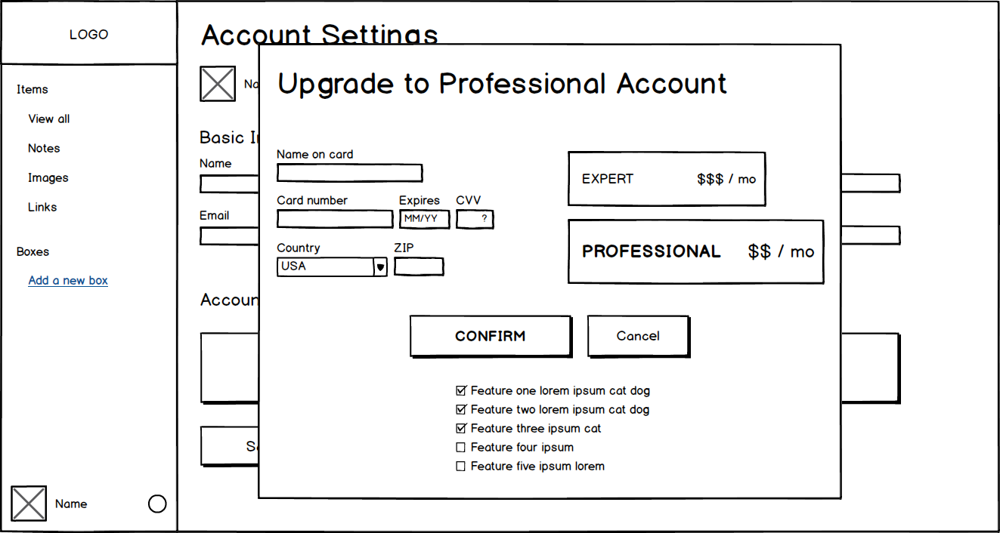

The Challenge
Using a brief survey sent to my network and strategically posted on forums like Reddit and Slack, noticeable patterns emerged from the responses to questions regarding existing note taking, image saving, and link bookmarking methods. While some respondents expressed satisfaction with the basic utility of current methods, many also complained about the tendency to lose notes and inability to better organize or edit bookmarked links or saved images.
The Solution
The solution was a fairly clean and open dashboard design on which users could easily lay out their various content items. A left-side drawer menu would enable easy toggling between either all of their items, just notes, just images, or just links. An easily visible add button with a dropdown menu would make adding new content quick and simple. This menu also has a “Boxes” section where users can create categories for more thorough organization of their various items.
Click to view InVision prototype
Blank dashboard inviting users to add their first note, image, or link. Notice clear dropdown menu below center "add" button.
Dashboard view showcasing what a relatively full state would look like with all items on display. Options to organize are in the left menu.

Account Settings page (accessible from bottom-left gear icon) with choices to upgrade level of account and pay.
The Process
The process began with a survey that thankfully had responses from a diverse range of users geographically and in different professions. Simplicity and clear organization were what users wanted beyond the quick practicality of existing, disparate tools.
This naturally led to competitive analysis of existing note, image, and link storage and organization platforms. Google Drive naturally stood out, along with similar platforms like Dropbox and Evernote. In hindsight, I probably should have analyzed these a good deal more, but I wanted to also give existing, perhaps more primitive tools (like the basic Notes app as well as pen and paper) their due, given how quick, convenient, and therefore popular (based on survey results) they still are. Clearly their ease should be incorporated into an effective app that nonetheless can do a lot more for users.

Google Drive is a major player in this space although users often complain about its complexity and how difficult it can be to find a desired item. This space needs a stress-free and aesthetically pleasing alternative.

The trusty, workaday Notes app on many smartphones seems to meet many users' basic need for taking down a quick note, but ultimate it has little to offer in the way of organization or aesthetic appeal.

It's worth noting the value of this formidable player from the analog world. Haphazard as it is, wouldn't it be great if an app like Orion could nonetheless mimic its satisfying, tactile spontaneity?
Personas came next, based on initial research findings. I have a special affection for this somewhat imaginative step of the design process. Through it, the somewhat dry and diffuse data from survey responses can coalesce into more real characters to take seriously as potential human users.

Key survey insights
Gerald
50 years old
Marketing
San Antonio, Texas
“Ever on the lookout for new opportunities
for my business, I need to record ideas
and refer back to them effortlessly.”

Sample persona based on a seasoned user from the business world. Click here to open all three personas as a PDF file in a new tab.
Next came content analysis and user stories to exhaustively determine what would then be put into user flows. Below is a basic sitemap created in Balsamiq and user flows built in Draw.io.
Click here to open flows as a PDF file in a new tab.
Branding & Visual Design
With a basic understanding of user needs and the broader structure of Orion coming into view, I took time to do work on its more aesthetic aspects. I arrived at the name Orion when thinking of what a beloved constellation it is and, especially, how easy it is to find for most stargazers. Below is some logo brainstorming sketching I did based the famous three stars of Orion. Finding one's content in Orion should be as easy as finding those three stars.
Below are some initial logo ideas that eventually progressed into something more relatable to potential users than just stars. The crisp clarity of the Avenir Roman typeface became preferable, as well. From here, a calming, deep blue color scheme made sense that would likely also appeal to more serious academic users who came up frequently in my survey.
Click here to open style guide as a PDF file in a new tab.
Next began the wireframing stage, as clickability of category ity. User testing


A few homepage layout ideas made in Balsamiq



Low fidelity wireframes from left to right (or top to bottom): account sign-up screen, dashboard layout, and account screen with upgrade modal window
Below are a few examples of elements subjected to user testing on UsabilityHub.


Interface mockups used for navigation testing on UsabilityHub
Home page design submitted for user first impressions via Usability Hub's Five Second Test. I found that users were a little disoriented by the diagonal, very spread out look of things, delaying their learning what the page is really about. This was a perfect example of how something I found personally, aesthetically appealing turned out to not ultimately be in the user's best interest.
I also first cut my teeth on HTML, CSS, and a bit of JavaScript on this project. I appreciated solidifying basics and seeing styling applied at some scale, especially through a responsive grid system. Click here to see a simple coded prototype of Orion with two basic screens. The home page will open in a new tab and then any of the calls to action on it will lead to the dashboard screen (with menu toggles on the "Add" button and account settings gear icon). Feel free to test out the use of media queries to see responsiveness (including a sliding menu drawer) at a variety of screen sizes!
A few screen shots from actual coded Orion prototype. Click here to have a look.
Conclusion
Working through the design process of Orion was challenging and enlightening. The use of surveys and tests freed me from idle speculation and instead grounded me in responses from real users to my work. The answer to every question was ultimately to test, and I wish I had subjected every element of the design to a lot more testing via navigation testing and preference testing with alternative ideas.
The final product is therefore only the outermost realization of weeks of iterative effort (although, again, a bit more abbreviated than would be desirable).
Each element is as purposefully chosen as possible to provide users with an all-in-one organization system that will make their daily life easier. In the future, I look forward to a much more extensive research and testing process.
Click to view InVision prototype
Back to top